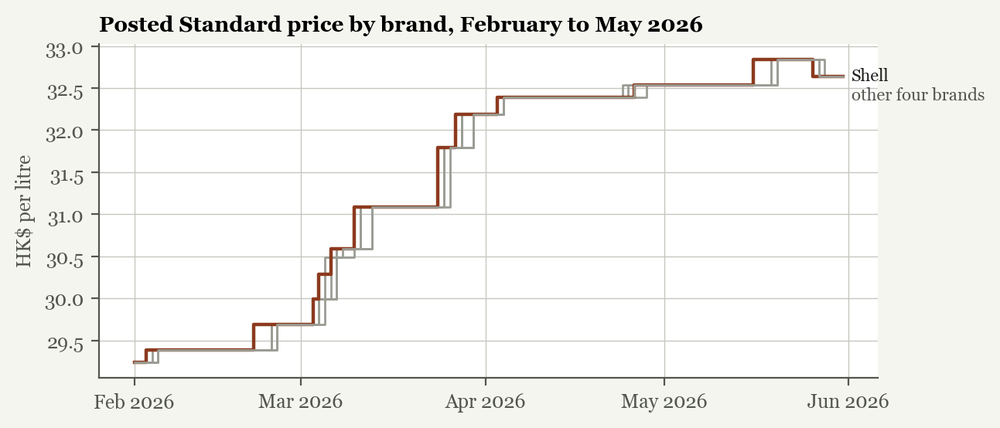
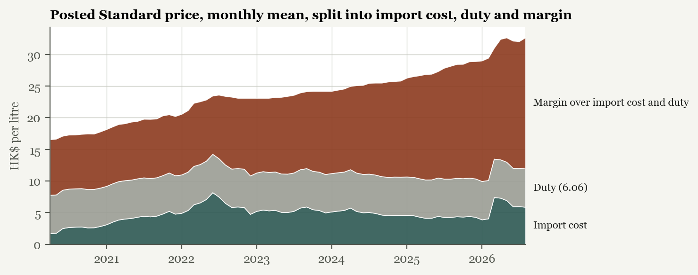
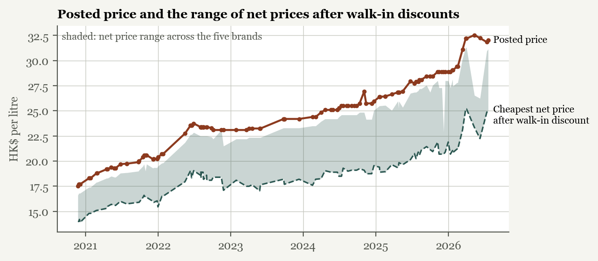
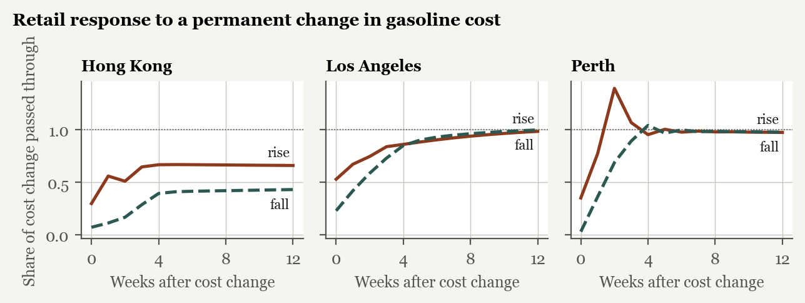
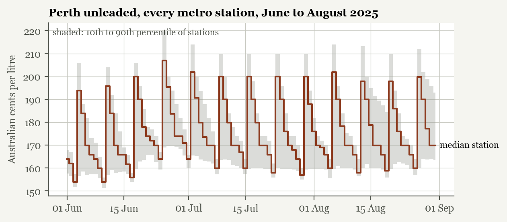

{{hkDays}} days, five brands, {{hkEpisodes}} price changes
Hong Kong's five petrol brands posted the same Standard pump price on {{hkShareEqual}}% of days from {{hkStart}} to October 2026. Of {{hkEpisodes}} changes, {{hkEpisodesUp}} were increases. Over the same years the margin left after import cost and duty roughly doubled.
of price changes were matched by all five brands within a week, usually within {{hkMedianLag}} days. All five moved on the same day in {{hkShareSameDay}}%.
increases to cuts. In 2023 and 2024 there were {{hkUpTwentyThreeFour}} increases and no cuts while import costs fell.
margin per litre over import cost and duty, first year against last. After walk-in discounts: HK${{netMarginFirst}} to {{netMarginLast}}.
The question
In Los Angeles or Perth, stations a few hundred meters apart often post prices tens of cents a litre apart. In Hong Kong the five brands that run nearly every station post one price for days or weeks, then change it within a day or two of each other. A small market with the same import costs and fully public prices can produce that with no agreement at all. So can coordination. Competition law treats the two differently, and the tools for telling them apart are screens: tests of whether prices behave the way costs and independent decisions would make them behave.
This project runs those screens on every posted price change since April 2020 and puts two markets beside Hong Kong: Los Angeles, with many sellers and weekly federal price data, and Perth, where every station's price is public a day ahead.
Data
The Consumer Council publishes each brand's posted price as a small file on data.gov.hk, and the portal keeps a copy every time the file changes: 1,210 versions since 30 April 2020. Rebuilt day by day, they give each brand's price on every day. Walk-in discounts are not in that file, so they come from {{discDays}} Internet Archive captures of the Council's comparison page; on those days its pump prices match the open-data file for 97.5% of rows. Hong Kong's import cost is the Census and Statistics Department's monthly unit value of unleaded petrol imports. Perth is FuelWatch's daily price for every metropolitan station; Los Angeles is the EIA's weekly retail and daily spot series.
Finding 1

An episode starts with the first brand to change price and collects every other brand's first change in the same direction within seven days. In {{hkShareFullWeek}}% of the {{hkEpisodes}} episodes all five moved, by the same amount in {{hkShareSameSize}}% of those. When one brand moved alone it was Shell {{hkLeadShell}} times, Esso {{hkLeadEsso}} and Caltex {{hkLeadCaltex}}; PetroChina and Sinopec almost never went first. The premium grade shows the same habit over a longer span: Shell raised its premium surcharge from HK$1.19 to HK$1.60 in January 2024, the others matched it in January 2025, Shell then went to HK$1.80, and all four matched within a week.
Finding 2

The posted price averaged HK${{postedFirst}} a litre in the first twelve months and HK${{postedLast}} in the last twelve; the import cost went from HK${{importFirst}} to HK${{importLast}}. From January 2023 to December 2025 the posted price rose from HK${{spanPostedFrom}} to HK${{spanPostedTo}} while the import cost fell from HK${{spanImportFrom}} to HK${{spanImportTo}}. Walk-in discounts grew too, from an average of HK${{discMeanFirst}} to HK${{discMeanLast}}, but the margin on the price after that discount still went from HK${{netMarginFirst}} to HK${{netMarginLast}}.

Finding 3

| Market | Rise, week 0 | Fall, week 0 | Rise, week 4 | Fall, week 4 | Equal? (p) |
|---|---|---|---|---|---|
| Hong Kong | {{hkRiseZero}}% | {{hkFallZero}}% | {{hkRiseFour}}% | {{hkFallFour}}% | {{hkAsymP}} |
| Los Angeles | {{laRiseZero}}% | {{laFallZero}}% | {{laRiseFour}}% | {{laFallFour}}% | {{laAsymP}} |
| Perth | {{perthRiseZero}}% | {{perthFallZero}}% | {{perthRiseFour}}% | {{perthFallFour}}% | {{perthAsymP}} |
The asymmetry in Hong Kong and Los Angeles holds with six and eight lags; Perth's is not significant in any version. Part of Hong Kong's slowness is mechanical, since its posted price changed in only {{hkUnchangedWeeks}}% of weeks. The lean toward rises is the part that is not.
The comparison

Perth's retailers must give FuelWatch the next day's price by 2pm and hold it for 24 hours, so prices are as public as Hong Kong's. On a typical day the cheapest and dearest of its {{perthStations}} stations are {{perthRange}} cents a litre apart, and the most common price covers {{perthModal}}% of them. The weekly cycle, low on Tuesday and restored on Wednesday, is a form of coordination that Byrne and de Roos (2019) traced to price leadership, but it ends in a price war every week.
What it means
None of this is evidence of an agreement. Hong Kong's Competition Commission said in 2017 that follow-the-leader pricing on its own reveals little, and US law asks for more than parallel conduct before inferring a conspiracy. What the screens add is that a stable leader, increases that outnumber cuts three to one, faster pass-through of rises, and a margin that doubled while the product did not all occur together and persist. Station costs and rents, the timing of each brand's price notices, and dated discount terms would separate cost from conduct. None of them is published as data.
Limits: the record starts in April 2020; day-level timing depends on when the archive copied the file; the import price is a monthly average; the margin is gross of storage, delivery, station costs and rent; card and loyalty discounts are not observed.
Method and code
Every number on this page and in the paper is written by
scripts/export_numbers.py from the analysis outputs. The fetch
scripts download every source; scripts/run_all.py runs the
screens; docs/decisions.md lists each data decision. The
paper is a PDF of 11 pages with the
full method and references.